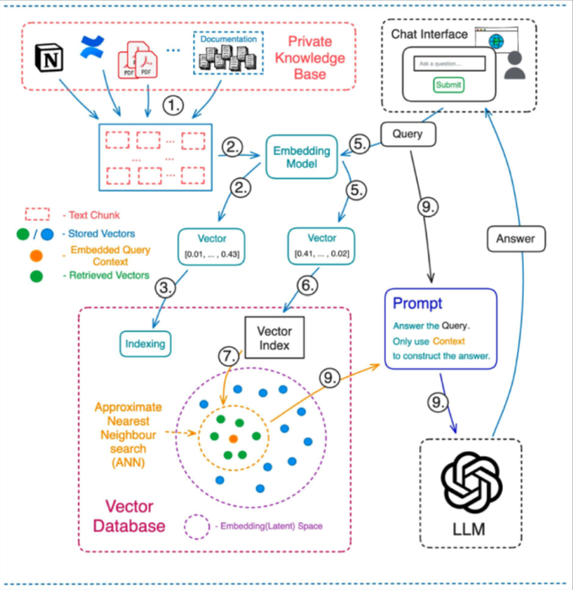

%load_ext autoreload
%autoreload 2
from langchain.vectorstores.chroma import Chroma
from langchain.embeddings.openai import OpenAIEmbeddings
from langchain.text_splitter import CharacterTextSplitter
from langchain.document_loaders import DirectoryLoader, UnstructuredMarkdownLoader
from langchain.chat_models import ChatOpenAI
from langchain.chains import ConversationalRetrievalChain
from langchain.memory import ConversationBufferMemory
# directory to store vector database
persist_directory = ".db/"
openai_api_key = os.environ['OPENAI_API_KEY']
# loader that loads `markdown` documents
loader = DirectoryLoader("./output/", glob="**/*.md", loader_cls=UnstructuredMarkdownLoader)
# text splitter converts documents to chunks
docs = loader.load()
text_splitter = CharacterTextSplitter(chunk_size=1024, chunk_overlap=128)
chunks = text_splitter.split_documents(docs)
# embedding model to convert chunks to embeddings
embeddings = OpenAIEmbeddings(openai_api_key=openai_api_key)
# load vector database, uncomment below two lines if you'd like to create it
#################### run only once at beginning ####################
# db = Chroma.from_documents(documents=chunks, embedding=embeddings, persist_directory=persist_directory)
# db.persist()
####################################################################
db = Chroma(persist_directory=persist_directory, embedding_function=embeddings)
memory = ConversationBufferMemory(
memory_key="chat_history", output_key='answer', return_messages=False)
# create QA chain using `langchain`, database is used as vector store retriever to find "context" (using similarity search)
qa = ConversationalRetrievalChain.from_llm(
llm=ChatOpenAI(temperature=0.2, model_name='gpt-3.5-turbo'),
chain_type="stuff",
retriever=db.as_retriever(),
get_chat_history=lambda o:o,
memory=memory,
return_generated_question=True,
verbose=False,
)1 Introduction
Recently I presented at REA Unstack’d on Large Language Models. It was mostly a demo about a ChatBot that I’ve been experimenting with at work. This ChatBot can answer Australian property related questions and was built using publicly available data from our company - PropTrack.
Later on, we also had a panel discussion on use of LLMs for corporates. We discussed about latest research, safety, deployment & all things LLM.

Meet Sachin Abeywardana & Ned Letcher, our panelists.
There are many tutorials available today that showcase how to build a Q/A ChatBot, and most (if not all) use LangChain. Over the past few months, this framework has become extremely popular among all who want to use LLMs. But, its source code is hard to read and if you are trying to do something that’s not within the capabilities of the framework, it becomes extremely difficult.
Here's a few thoughts on (LangChainAI?), the problems I see with it currently, and how I think it could improve. This was originally formatted as a message to (hwchase17?):
— Sam Hogan ((0xSamHogan?)) July 12, 2023
Here's a few things off the top of my head –
1. Heavy use of OOP. Having multiple layers of abstraction…
I recently wrote about LLMChains in langchain too, and found the same to true. You can find the previous blog post here. I would highly recommend the readers to give the previous blog post a read, it will explain LLMChains and Chains in langchain, that will be instrumental in understanding conversational chatbot that we are building today.
Note
👉 This whole blog post is written with commit-id 24c165420827305e813f4b6d501f93d18f6d46a4. The blog post in itself is a completely working jupyter notebook with code-snippets.
2 Chatbot: Implementation in langchain
Let’s say you have a number of documents, in my case, I have a bunch of markdown documents. And we want to build a question answering chatbot that can take in a question, and find the answer based on the documents.

In essence, the chatbot looks something like above. We pass the documents through an “embedding model”. It is easy enough to use OpenAI’s embedding API to convert documents, or chunks of documents to embeddings. These embeddings can be stored in a vector database such as Chroma, Faiss or Lance.
The user interacts through a “chat interface” and enters a question/query. This query can also be converted to an embedding using the embedding model. Next, we can find the nearest chunks (similar to the query) using similarity search, then pass these nearest chunks (referred to as “context”) to a Large Language Model such as ChatGPT.
Finally, we retrieve an answer and this answer get’s passed back to the user in the chat interfact. We store this interaction in chat history and continue.
That is all in theory, in code, using langchain, above would look like:
# let's ask a question
qa({"question": "Why is it so hard to find a rental property in Australia in June 2023?", "chat_history": []}){'question': 'Why is it so hard to find a rental property in Australia in June 2023?',
'chat_history': '',
'answer': 'In June 2023, it is hard to find a rental property in Australia due to several factors. Firstly, vacancy rates have fallen to very low levels across the country since the pandemic, meaning there is a shortage of available rentals. This is particularly evident in cities like Sydney and Melbourne. \n\nAdditionally, the departure of investors from the rental market has impacted rental supply. Many investors chose to sell their rental properties during 2020 and 2021, and there are few new investors entering the market to replace them. \n\nOn the other hand, demand for rentals has been strong in many parts of the country, especially in inner-city areas. The return of international students, migrants, and office workers to CBDs has led to a surge in demand for rental properties. \n\nOverall, these factors have created a tight rental market with low vacancy rates and increasing rental prices, making it difficult for individuals to find a rental property in Australia in June 2023.',
'generated_question': 'Why is it so hard to find a rental property in Australia in June 2023?'}Looking at the answer above, it really answers the question - “Why is it so hard to find a rental property in Australia in June 2023?” very well. Above might only be a few lines of code, but there is actually quite a lot going on underneath. Refer to Figure 1 for everything that’s going on underneath.
But, as a recap, and matching our steps with code shared above:
- Load markdown files in a list
loader = DirectoryLoader("./output/", glob="**/*.md", loader_cls=UnstructuredMarkdownLoader) - Create a splitter that can split documents to chunks
text_splitter = CharacterTextSplitter(chunk_size=1024, chunk_overlap=128) - Convert each chunk and store as Embeddings in a Chroma DB
Chroma.from_documents(documents=chunks, embedding=embeddings, persist_directory=persist_directory) - Use the database as retriever to get relevant text (context), and based on ‘question’, use OpenAI’s gpt-3.5-turbo (ChatGPT) model to answer question based on context.
ConversationalRetrievalChain.from_llm(
llm=ChatOpenAI(temperature=0.2, model_name='gpt-3.5-turbo'),
chain_type="stuff",
retriever=db.as_retriever(),
memory=memory,
verbose=False,
)- Also store conversation as chat history in memory
memory = ConversationBufferMemory(memory_key="chat_history", return_messages=False)
2.1 Text splitter
For our simple usecase, we are using a text splitter of type CharacterTextSplitter.
text_splitter = CharacterTextSplitter(chunk_size=1024, chunk_overlap=128)We are using a chunk_size of 1024, which means that the document will be divided into chunks of size 1024, and there will be 128 character overlap between each of the chunks.
The CharacterTextSplitter used above splits texts based using regex and a separator. The separator in this case is '\n\n'. Thus, anytime there are two line breaks, our text splitter will split documents. Internally, in LangChain to split a text, _split_text_with_regex is being called.
# simplified version without `keep_separator`
def _split_text_with_regex(
text: str, separator: str, keep_separator: bool
) -> List[str]:
# Now that we have the separator, split the text
if separator:
splits = re.split(separator, text)
else:
splits = list(text)
return [s for s in splits if s != ""]There are many other text splitters that we could have also used. For a complete list - refer here.
Note
One good one to further try would be - MarkdownHeaderTextSplitter. This particular splitter splits based on markdown headings, and it might be more useful for our usecase.
Remember, the idea of chunking is to keep text with common context together.
Now, that we have created our first bit, a text splitter that can split documents to chunks, let’s move on to the embedding model.
2.2 Embedding model
Also, for our embedding model - we are using OpenAIEmbeddings. The main idea for the embedding model is to convert the chunks from before to embeddings.
Remember, an embedding is only a vector representation of the text.
So, how do we convert our chunks (few sentences long) to a bunch of numbers? We can use openai’s embeddings API. Without langchain, this looks something like:
import openai
chunk = "This is a sample chunk consisting of few sentences."
def get_embedding(text, model="text-embedding-ada-002"):
text = text.replace("\n", " ")
return openai.Embedding.create(input = [text], model=model)['data'][0]['embedding']
emb = get_embedding(chunk, model='text-embedding-ada-002')
len(emb)1536In langchain, to achieve the same we instantiate from OpenAIEmbeddings.
from langchain.embeddings import OpenAIEmbeddings
embeddings = OpenAIEmbeddings()
text = "This is a test document."
query_result = embeddings.embed_query(text)
len(query_result)1536Now, to embed all chunks at once, OpenAIEmbeddings has a method called embed_documents.
from langchain.embeddings import OpenAIEmbeddings
import numpy as np
embeddings = OpenAIEmbeddings()
docs = ["This is test document 1.", "This is test document 2."]
embs = embeddings.embed_documents(docs)
np.array(embs).shape(2, 1536)Great, now that we have a way to embed all documents, let’s look at vector database next.
2.3 Vector database
Consider the vector database to a repository of knowledge. All our chunks get converted to embeddings and get stored in a vector-db. In our case, we are using chroma-db.
Looking at the documentation, we start by creating a client, and then a collection. Once we have a collection ready, it is very simple to query the collection to get back the results.
results = collection.query(
query_texts=["This is a query document"],
n_results=2
)What goes under the hood inside langchain, is that we first instantiate a chroma-db collection. Next, we use collection’s upsert method passing in embeddings and texts. And this way, we have created our vector database that can be used to find nearest chunks from our documents based on “query” using similarity-search.
Note
❓ Some questions here to ask would be
- Would results look different or better if we used Cohere Embeddings? What would be the price difference?
- What would the quality of results be like if we used open source models like Llama-v2 released a few days ago?
- What if we used
sentence-transformers? - Do we really need a vector database? Can we store the embeddings as a
np.arrayand use cosine-similarity to find nearest embeddings?
2.4 Q&A ChatBot
So far we have looked at text-splitter, embedding model and vector database. These are the building blocks of the chatbot. But, how do we bring the building blocks together?
In langchain, all the pieces come together in ConversationalRetrievalChain which is the main topic of this blog post too. We instantiate an instance of the class using @classmethod called from_llm.
qa = ConversationalRetrievalChain.from_llm(
llm=OpenAIChat(temperature=0, max_tokens=-1),
chain_type="stuff",
retriever=db.as_retriever(),
memory=memory,
get_chat_history=lambda x: x,
verbose=True,
)
response = qa({
"question": "Why is it so hard to find a rental property in Australia in June 2023?",
"chat_history": []
})There are two main things that go on inside a conversational retrieval chain.
A conversational retrieval chain can take in a query, and based on the input query (question) and chat-history, it updates it to a new question.
This new question is then passed to a second document chain, to find the nearest chunks (based on question) - referred to as “context”, and this context alongside the new question get’s passed to a large language model (such as gpt-3.5-turbo or ChatGPT), to retrieve the answer.
So, internally - ConversationalRetrievalChain consists of two chains:
- A question generator chain, which updates input query/question based on chat history (
LLMChain) - And a document chain to join retrieved documents/chunks together (
StuffDocumentsChain)
TipOn
LLMChains
Good news! We have already covered LLMChains in our previous blog post before here. In essence, given a prompt, the LLMChain can be used to generate an answer based on the prompt.
Going forward, I am going to assume that the reader has read the previous blog post and has a solid understanding of LLMChains & Chains in general.
From our previous blog post, we know that anytime we call any chain in langchain, the __call__ method from Chain class gets invoked which in turn makes a call to _call method of derived class.
The ConversationalRetrievalChain is a subclass of BaseConversationalRetrievalChain which in turn is a subclass of Chain.
The _call method is implemented inside BaseConversationalRetrievalChain and it looks like below:
def _call(
self,
inputs: Dict[str, Any],
run_manager: Optional[CallbackManagerForChainRun] = None,
) -> Dict[str, Any]:
_run_manager = run_manager or CallbackManagerForChainRun.get_noop_manager()
question = inputs["question"]
get_chat_history = self.get_chat_history or _get_chat_history
chat_history_str = get_chat_history(inputs["chat_history"])
if chat_history_str:
callbacks = _run_manager.get_child()
new_question = self.question_generator.run(
question=question, chat_history=chat_history_str, callbacks=callbacks
)
else:
new_question = question
accepts_run_manager = (
"run_manager" in inspect.signature(self._get_docs).parameters
)
if accepts_run_manager:
docs = self._get_docs(new_question, inputs, run_manager=_run_manager)
else:
docs = self._get_docs(new_question, inputs) # type: ignore[call-arg]
new_inputs = inputs.copy()
if self.rephrase_question:
new_inputs["question"] = new_question
new_inputs["chat_history"] = chat_history_str
answer = self.combine_docs_chain.run(
input_documents=docs, callbacks=_run_manager.get_child(), **new_inputs
)
output: Dict[str, Any] = {self.output_key: answer}
if self.return_source_documents:
output["source_documents"] = docs
if self.return_generated_question:
output["generated_question"] = new_question
return outputIn simple terms, first, the question_generator chain is called that updates the input question/query based on chat history.
Next, we retrieve the documents based on our new_question using similarity search.
These retrieved docs, then get passed to combine_docs_chain which combines the retrieved chunks and passes them over to a large language model (in this case gpt-3.5-turbo) to get back the answer.
Let’s understand both chains one by one in the next two sections. That way, we will be able to have a solid understanding of our conversational retrieval chain.
2.4.1 Question generator chain
Let’s start out with the question generator. Remeber, the question generator takes in the user question and a chat history, and based on chat history, it updates the question to a new question.
Why does it do that? The question generator rephrases the original question to be a standalone question. So if it is a follow up question like “Why did that happen?” from the user, remember, we do not know what “that” is in this particular question.
So, what the question generator will do, is that it will look at the chat history, and fill information for the word “that” to update the question to be a standalone question. So the new question could be “Why did the rental prices increase in Australia?” based on chat history.
We will also be looking at a working example of this in our code in this section.
From a code perspective, in langchain, the question_generator is an instance of LLMChain.
In this case the prompt for the question generator (LLMChain) is CONDENSE_QUESTION_PROMPT which looks like:
_template = """Given the following conversation and a follow up question, rephrase the follow up question to be a standalone question, in its original language.
Chat History:
{chat_history}
Follow Up Input: {question}
Standalone question:"""
CONDENSE_QUESTION_PROMPT = PromptTemplate.from_template(_template)So taking in a chat_history and the original question (from the user), internally a new question get’s generated! This new question is a standalone question as discussed at the start of this section.
Let’s see it in action. Let’s see how the original question get’s updated to a new question based on chat_history. Remember, the first time we interact with the question answer bot, chat history is NULL, so no new question is generated. But, it works from the second time forward.
We can get langchain to return the newly generated question by passing in return_generated_question=True to the ConversationRetrievalChain.
qa.memory.chat_memory.messages[HumanMessage(content='Why is it so hard to find a rental property in Australia in June 2023?', additional_kwargs={}, example=False),
AIMessage(content='In June 2023, it is hard to find a rental property in Australia due to several factors. Firstly, vacancy rates have fallen to very low levels across the country since the pandemic, meaning there is a shortage of available rentals. This is particularly evident in cities like Sydney and Melbourne. \n\nAdditionally, the departure of investors from the rental market has impacted rental supply. Many investors chose to sell their rental properties during 2020 and 2021, and there are few new investors entering the market to replace them. \n\nOn the other hand, demand for rentals has been strong in many parts of the country, especially in inner-city areas. The return of international students, migrants, and office workers to CBDs has led to a surge in demand for rental properties. \n\nOverall, these factors have created a tight rental market with low vacancy rates and increasing rental prices, making it difficult for individuals to find a rental property in Australia in June 2023.', additional_kwargs={}, example=False)]So far, we have the above chat history. Let’s now ask a follow up question about the home price index and say “How has the pandemic affected this?” and we can see the question generator in action.
qa("How has the pandemic affected this?"){'question': 'How has the pandemic affected this?',
'chat_history': 'Human: Why is it so hard to find a rental property in Australia in June 2023?\nAI: In June 2023, it is hard to find a rental property in Australia due to several factors. Firstly, vacancy rates have fallen to very low levels across the country since the pandemic, meaning there is a shortage of available rentals. This is particularly evident in cities like Sydney and Melbourne. \n\nAdditionally, the departure of investors from the rental market has impacted rental supply. Many investors chose to sell their rental properties during 2020 and 2021, and there are few new investors entering the market to replace them. \n\nOn the other hand, demand for rentals has been strong in many parts of the country, especially in inner-city areas. The return of international students, migrants, and office workers to CBDs has led to a surge in demand for rental properties. \n\nOverall, these factors have created a tight rental market with low vacancy rates and increasing rental prices, making it difficult for individuals to find a rental property in Australia in June 2023.',
'answer': 'The given context does not provide specific information about the rental property market in Australia in June 2023.',
'generated_question': 'How has the pandemic affected the rental property market in Australia in June 2023?'}As can be seen above the original question was “How has the pandemic affected this?” which got updated to the generated_question - “How has the pandemic impacted the difficulty in finding a rental property in Australia in June 2023?”. This was done based on the chat history.
And that’s all that there is to know about the question generator! We can now move on the document chain which is StuffDocumentsChain.
2.4.2 Document chain
The stuff documents chain is available as combine_docs_chain attribute from the conversational retrieval chain.
The StuffDocumentsChain itself has a LLMChain of it’s own with the prompt
system_template = """Use the following pieces of context to answer the users question.
If you don't know the answer, just say that you don't know, don't try to make up an answer.
----------------
{context}"""
messages = [
SystemMessagePromptTemplate.from_template(system_template),
HumanMessagePromptTemplate.from_template("{question}"),
]
CHAT_PROMPT = ChatPromptTemplate.from_messages(messages)
PROMPT_SELECTOR = ConditionalPromptSelector(
default_prompt=PROMPT, conditionals=[(is_chat_model, CHAT_PROMPT)]
)So, we to our prompt, we pass in the context and a follow up question. It specifically says “just say that you don’t know, don’t try to make up an answer.” This is good to limit hallucination.
When we call the StuffDocumentsChain, it does two things - first it calls combine_docs. This method first combines the given input chunks by using separator \n\n to generate context.
def _get_inputs(self, docs: List[Document], **kwargs: Any) -> dict:
# Format each document according to the prompt
doc_strings = [format_document(doc, self.document_prompt) for doc in docs]
# Join the documents together to put them in the prompt.
inputs = {
k: v
for k, v in kwargs.items()
if k in self.llm_chain.prompt.input_variables
}
inputs[self.document_variable_name] = self.document_separator.join(doc_strings)
return inputs
def combine_docs(
self, docs: List[Document], callbacks: Callbacks = None, **kwargs: Any
) -> Tuple[str, dict]:
inputs = self._get_inputs(docs, **kwargs)
# Call predict on the LLM.
return self.llm_chain.predict(callbacks=callbacks, **inputs), {}Given our question, remember, we first find the closest chunks to the question. These chunks are then joined together using \n\n separator.
Note
❓ I wonder how things would look like if we numbered the various chunks and passed in the context as bullet points?
Next, we just call LLMChain’s predict method, this generates an answer using a prompt and returns the answer.
You know what? That’s really it! I hope that now you understand completely how context based question answering chatbots work when using langchain. :)
3 Conclusion
In langchain, once we have a vector database, below lines of code are enough to create a chatbot, that can answer user questions based on some “context”.
import os
from langchain.vectorstores.chroma import Chroma
from langchain.embeddings.openai import OpenAIEmbeddings
from langchain.chat_models import ChatOpenAI
from langchain.chains import ConversationalRetrievalChain
from langchain.memory import ConversationBufferMemory
persist_directory = "./db/"
openai_api_key = os.environ['OPENAI_API_KEY']
embeddings = OpenAIEmbeddings(openai_api_key=openai_api_key)
db = Chroma(persist_directory=persist_directory, embedding_function=embeddings)
memory = ConversationBufferMemory(
memory_key="chat_history", output_key='answer', return_messages=False)
# create QA chain using `langchain`, database is used as vector store retriever to find "context" (using similarity search)
qa = ConversationalRetrievalChain.from_llm(
llm=ChatOpenAI(temperature=0.2, model_name='gpt-3.5-turbo'),
chain_type="stuff",
retriever=db.as_retriever(),
get_chat_history=lambda o:o,
memory=memory,
return_generated_question=True,
verbose=False,
)We saw all the steps in detail as part of this blog post. We also saw that the ConversationalRetrievalChain consists of two chains:
- Question generator chain (to generate a new standalone question based on chat history)
- Documents chain (to combine chunks as context and answer question based on context)
We saw that both chains consist of llm_chain with different prompts. We even saw the two prompts in detail.
And thus, we uncovered all the magic behind a conversational retrieval chain in langchain. I hope you enjoyed reading this blog post.
Please feel to reach out to me on twitter for any follow-up questions!